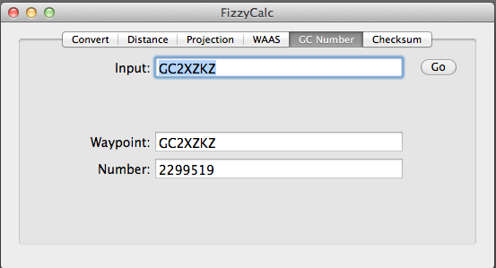

GC numbers are identifiers used by Geocaching.com. There are some puzzles that reference the integer values of the GC number.
(Excerpted from Geocaching.com): Each cache listing is assigned a code based on the order it was posted. Originally, the geocaching.com database translated this number into a hexadecimal code (0, 1,2,3,4,5,6,7,8,9,A,B,C,D,E,F) with a "GC" tagged onto the front. For example, GC28 is the oldest currently active geocache, Beverly.
With the popularity of geocaching, the database reached ID=65535 or GCFFFF - the maximum of four digit hexadecimal. Since waypoints were originally limited to six characters (as that's all GPSes supported), the programmers' solution was to change to a base 31 code: 0-9, A-Z with the letters I, L, O, Y, and Z left out. In December 2006, the database hit 512401 cache records, which meant that they had already had GCZZZZ, the maximum cache under the base 31 method. By this point, they were forced to add a digit.
